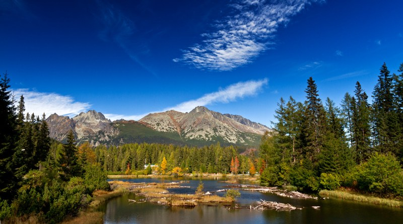
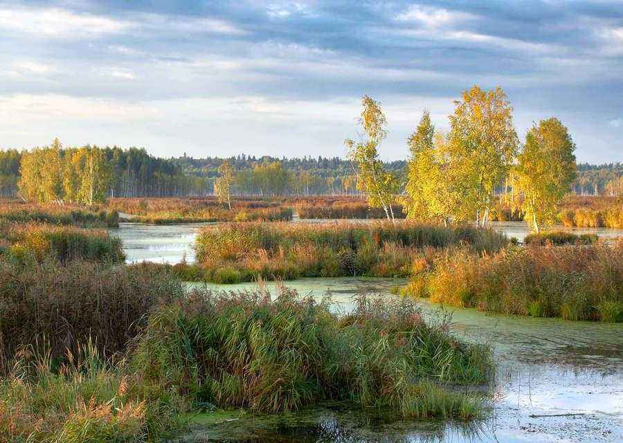
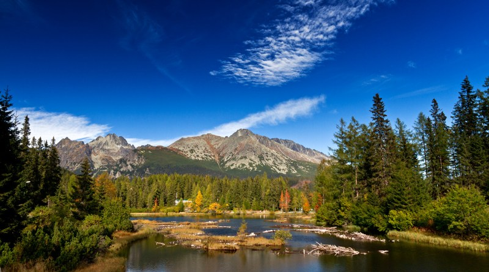
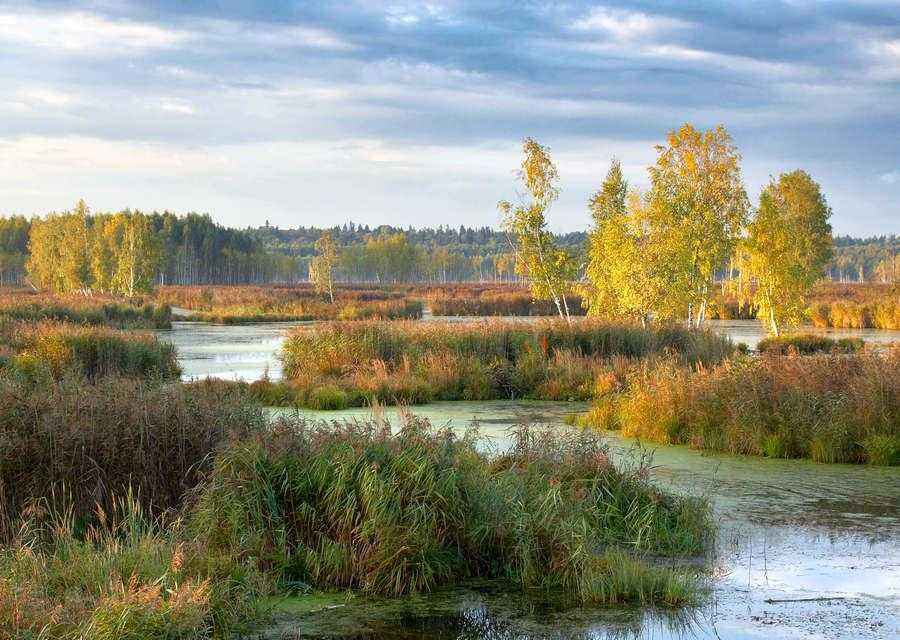

Обо мне:
Всем привет. Вы на странице моего резюме. Давайте знакомиться.
Меня зовут Виталий, я - фриланс backend-разработчик сайтов на WordPress,
а также в компании Seraphinite Solutions
В свободное от основной работы время я преподаю основы IT в компании GeekBrains и GeekSchool, играю на гитаре любимые песни
малоизвестных и слегка подзабытых рок-групп
Увлекаюсь также просмотром стримов по дисциплине CS:GO
Одно время увлекался игрой в настольный теннис
Буду рад услышать ваши истории!
Мои достижения:
Участвовал в конференциях WordCamp Russia, пока это не стало мейнстримом
Со-основатель локального сообщества WordPress в своем городе, являющегося частью глобального WordPress Community
Обучаю основам IT с 2017 года
Собираюсь однажды побывать на Шпицбергене
Мои контакты:
Село Кудыкино, площадь восстания, 2
Email:kudi_ty_idesh@mail.ru
Tel:+79104908870